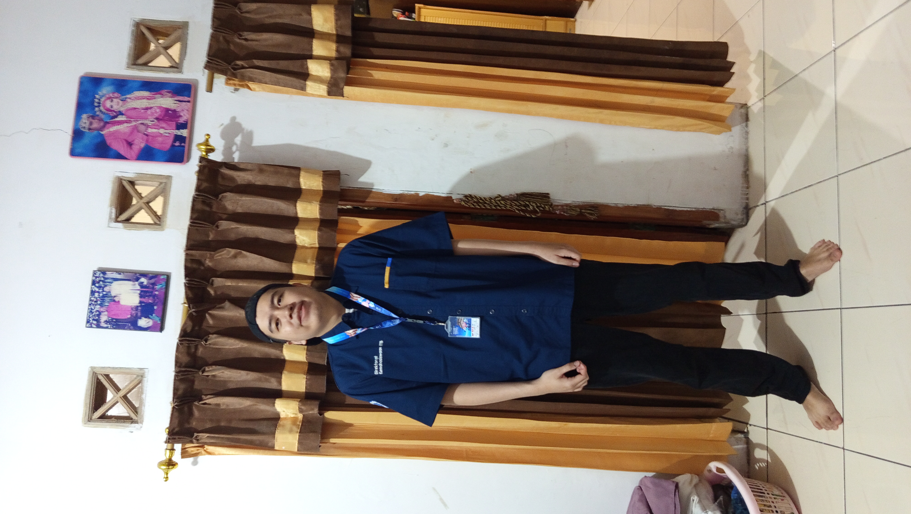

About Me
Master's graduate in Computational Science from Bandung Institute of Technology (ITB), with a thesis focused on computational fluid dynamics simulation using Python. I also hold a Bachelor's degree in Physics from ITB, with a final project focused on gravitational waves analysis.
I have experience in AI and software engineering. My expertise encompasses on AI and software engineering, utilizing tools such as Python, SQL and NoSQL databases, and JavaScript. My goals are to advance my knowledge in AI model development and solve complex problems by leveraging my technical background.